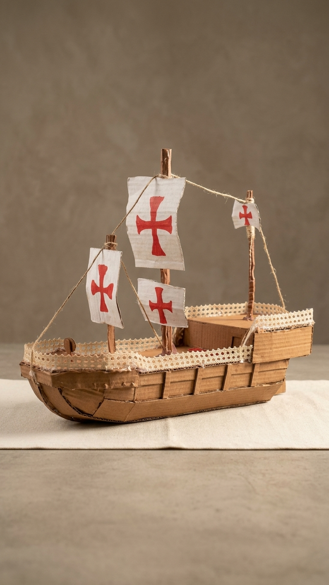

01 / Literatura & Música
Quando o mar entra na narrativa
No Canto VI de Os Lusíadas, a viagem dos navegadores enfrenta uma tempestade. O episódio aproxima a força da natureza das escolhas humanas no mar.
e se transformar um trecho em melodia ...
"O mar com a tempestade em cima brada;
Os ventos assoprando vão irados;
A noite vem escura e carregada;
Os raios pelo ar vão faiscados;
O mastro de assobiar já não cessava;
A vela, que a tormenta grande inchava."
🎵 Ouça a Composição Inspirada no Canto VI
Madrigal Renascentista (Alaúde, Viola da Gamba e Vocais Clássicos)
02 / Instrumentos
Dois modos de observar o céu
Toque em cada instrumento para comparar suas características.
360º
Astrolábio
Precisão
Sua escala circular auxiliava a observar posições dos astros e a obter referências para a orientação durante a navegação.
90º
Quadrante
Fio de prumo
A escala de um quarto de círculo e o fio de prumo permitiam observar a inclinação em relação a uma referência vertical.
03 / Galeria
As réplicas do projeto
Fotos reais das peças produzidas para o trabalho.

Réplica do Instrumento
04 / Princípios de física
Ciência para encontrar um caminho
Entenda os fundamentos físicos e astronômicos utilizados na navegação quinhentista.
Estrela Polar
No hemisfério norte, sua posição próxima da direção norte oferece uma referência visual para a orientação.
✦ Referência celeste · ↑ Direção de orientação
Vetorização de Ventos
Setas representam direções. Ao considerar o vento e o rumo da embarcação, a composição vetorial ajuda a visualizar o movimento ao navegar à bolina.
- Vento
- Rumo
- Resultante
Diagramas conceituais: não representam medições nem resultados experimentais do projeto.
05 / Quiz Interativo & Premiação
A Bússola do Destino & O Tesouro
Descubra qual é o seu perfil de navegador no Canto VI e resgate seu prêmio no estande!
A tempestade do Canto VI caiu sobre a caravela! Como você reage ao mar revolto?
Selecione uma opção abaixo para descobrir sua função na tripulação:
⚓
Seu perfil no Canto VI
O Piloto Destemido
Assim como Vasco da Gama na tempestade, você mantém a calma e o rumo certo mesmo quando o mar revolta!
N
E
S
O
🎁
Parabéns, Navegador!
Você conquistou seu prêmio!
Mar em Pote
Código do Voucher de Resgate
AGUARDANDO ESTANDE
Apresente este celular para os alunos no estande para resgatar!
✓ Este voucher já foi entregue e resgatado!